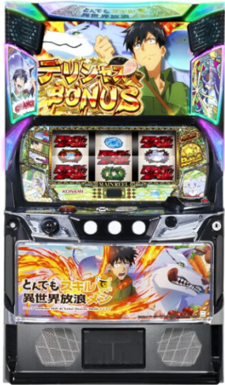

目次

スマスロ とんでもスキルで異世界放浪メシTONDEMO SKILL ｜ コナミアミューズメント（KONAMI）
⚠️ ST機。メインST「異世界ハンティングタイム」はループ率約70%、上位ST「女神スペシャルタイム」は約82%、最上位ST「超女神スペシャルタイム」は約93%ループ。純増約5.0枚/G、コイン持ち約32G/50枚。
スマスロ とんでもスキルで異世界放浪メシ スペック・機械割
| 設定 | AT初当たり | 機械割 |
|---|---|---|
| 1 | 1/349.3 | 97.9% |
| 2 | 1/339.2 | 99.1% |
| 3 | 1/322.4 | 101.0% |
| 4 | 1/286.5 | 105.3% |
| 5 | 1/263.7 | 109.1% |
| 6 | 1/247.3 | 112.1% |
遊技時間別・理論差枚数の目安
| 設定 | 機械割 | 3時間 | 6時間 | 12時間 |
|---|---|---|---|---|
| 1 | ||||
| 2 | ||||
| 3 | ||||
| 4 | ||||
| 5 | ||||
| 6 |
※ 遊技の判断はご自身の責任でお願いします。当サイトは一切の責任を負いかねます。
交換額（pt）の目安
| 設定 | 機械割 | 3時間 | 6時間 | 12時間 |
|---|---|---|---|---|
| 1 | ||||
| 2 | ||||
| 3 | ||||
| 4 | ||||
| 5 | ||||
| 6 |
※ 期待収支は理論値。実際の結果・ホールの交換レートとは異なります。
スマスロ とんでもスキルで異世界放浪メシ 小役確率
| 小役 | 確率 | 備考 |
|---|---|---|
| 調査中（全設定共通の見込み） | ||
ℹ️ 小役確率は現時点で調査中です。全設定共通の可能性が高く、解析情報が判明次第追記します。設定判別にはAT初当たり確率やCZ当選率を主軸にしてください。
スマスロ とんでもスキルで異世界放浪メシ 設定判別ポイント
- ① AT初当たり確率（最重要指標） 設定1（1/349.3）〜設定6（1/247.3）で約1.41倍の差。1/290以下で推移していれば設定4以上の目安になります。最も信頼性の高い判別要素です。
- ② CZ当選率 設定1（1/216.7）〜設定6（1/189.5）でCZ当選率に設定差があります。CZ経由のボーナス当選が多いほど高設定の期待度が上がります。
- ③ ST突入率・継続回数 ST機のため、ボーナスからのST突入率や継続回数にも注目。高設定ほどST突入が優遇されている可能性があります。ST連チャンが頻発する場合は高設定を意識しましょう。
- ④ 3,000G以上のサンプルで総合判断する 確率の波が大きい機種です。短期（1,000G未満）での判断は避け、AT初当たり確率・CZ当選率・演出示唆を組み合わせて総合的に判断してください。
CZ当選率（設定差あり）
| 設定 | CZ当選率 |
|---|---|
| 1 | 1/216.7 |
| 2 | 1/212.3 |
| 3 | 1/207.1 |
| 4 | 1/200.5 |
| 5 | 1/194.8 |
| 6 | 1/189.5 |
スマスロ とんでもスキルで異世界放浪メシ 天井・リセット
| 天井 | 条件 | 恩恵 |
|---|---|---|
| G数天井 | 1000G+α消化 | ボーナス当選 |
スマスロ とんでもスキルで異世界放浪メシ ST詳細
ST種別スペック
| ST名 | ゲーム数 | ループ率 | 備考 |
|---|---|---|---|
| 異世界ハンティングタイム | 25G | 約70% | メインST |
| 女神スペシャルタイム | 32G | 約82% | 上位ST |
| 超女神スペシャルタイム | 32G | 約93% | 最上位ST・純増約5.0枚/G |
ST種別詳細
- ゲーム数
- 25G
- ループ率
- 約70%
- 特徴
- 基本となるST。連続ボーナスで出玉を積み上げる
- ゲーム数
- 32G
- ループ率
- 約82%
- 特徴
- メインSTからの昇格で突入。高ループ率で連チャンに期待
- ゲーム数
- 32G
- ループ率
- 約93%
- 特徴
- 最高位のプレミアムST。突入時は大量出玉の大チャンス
設定判別ツール
総回転数とAT初当たり回数を入力してください。AT初当たり確率から各設定の出現しやすさを推定します。
スマスロ とんでもスキルで異世界放浪メシ よくある質問
スマスロ とんでもスキルで異世界放浪メシの設定6機械割は？
設定6の機械割は112.1%です。設定1が97.9%で、設定3（101.0%）から機械割100%を超えます。設定4（105.3%）→設定5（109.1%）→設定6（112.1%）と上位設定の恩恵が大きい構成です。
スマスロ とんでもスキルで異世界放浪メシの天井は？
天井は1000G+αでボーナスに当選します。ST機のため天井到達後はボーナスを経由してST突入を目指す流れとなります。
スマスロ とんでもスキルで異世界放浪メシの設定判別で重要な指標は？
AT初当たり確率が最重要指標です。設定1（1/349.3）と設定6（1/247.3）で約1.41倍の差があります。CZ当選率にも設定差があり（設定1：1/216.7〜設定6：1/189.5）、複数の指標を組み合わせて総合判断してください。
スマスロ とんでもスキルで異世界放浪メシのST継続率は？
メインSTの「異世界ハンティングタイム」はループ率約70%、上位STの「女神スペシャルタイム」は約82%、最上位STの「超女神スペシャルタイム」は約93%のループ率です。上位STに突入するほど連チャンが期待できます。
スマスロ とんでもスキルで異世界放浪メシのやめ時は？
ST終了後の即やめが基本です。天井が1000G+αと比較的深いため、ハマり台の天井狙いは700G〜が目安になります。ST中はループ率が高いため、終了まで必ず遊技してください。
スマスロ とんでもスキルで異世界放浪メシの純増枚数は？
純増は約5.0枚/Gです。ST中はこの純増でメダルが増加し、ループするほど大量出玉が期待できます。コイン持ちは約32G/50枚です。
CZ当選率に設定差はありますか？
CZ当選率には設定差があります。設定1が1/216.7、設定6が1/189.5で、高設定ほどCZに当選しやすくなっています。AT初当たり確率とあわせてカウントすることで設定判別の精度が向上します。